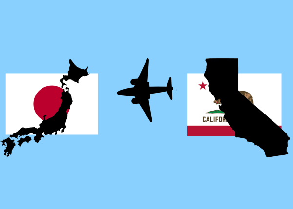
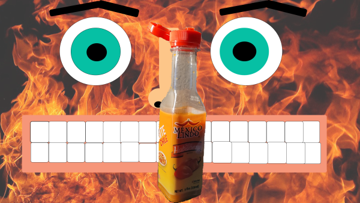
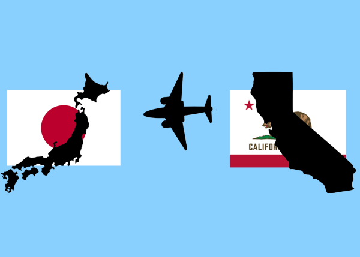
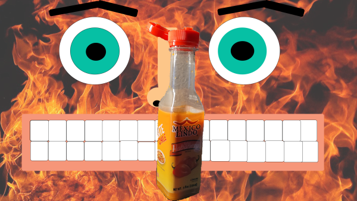

Our Group Pictures
Patrick's
Riley's

Juan's
Our goal was to pick our a phrase from a random selection of phrases and then had to come up with an image related to that phrase
Phrase: “Re-evaluation (a warm feeling)”
Patrick's
Riley's
Juan's


For the first drawing that was made, I had made it with the intention to create something that was very detailed oriented. most of the work spent was on trying to fit in as many different visual patters and detail as possible. The second drawing was made with nearly the opposite intention where by the point was to draw without detail, but instead, drawing abstracted and freeflowing line to create an illusion of a specific form or feature.